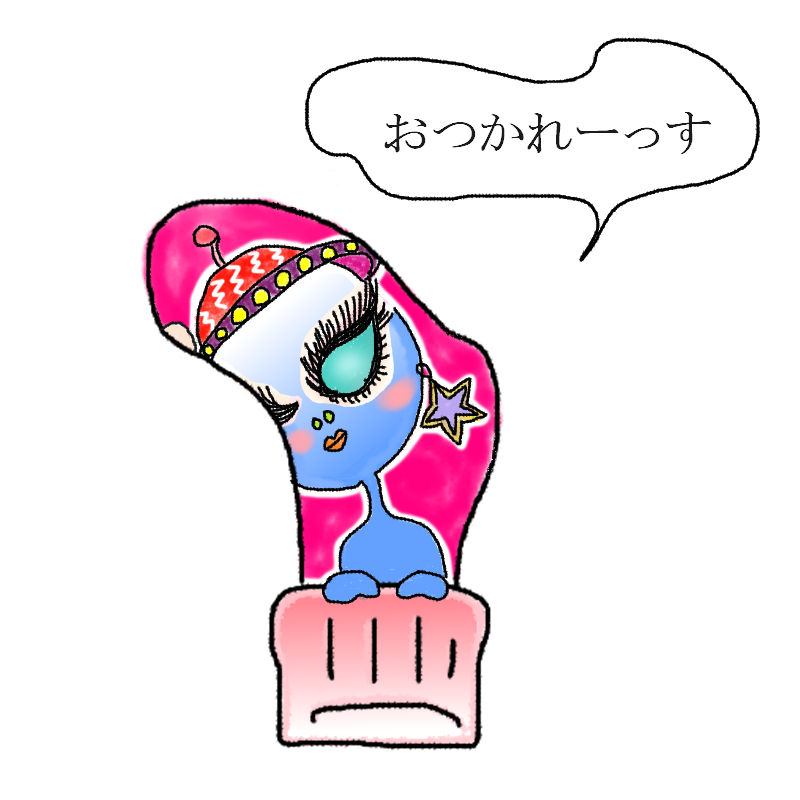

あなたの診断結果
？ ？ ？ （キャラクター名前募集中）小指の付け根外側にあく人
【どう見ても宇宙人×ギャルなのに、満員電車に揺られ
「地球人マジうける～」とマイペースに生きる
異星人タイプ】

「どう見ても宇宙人、なのに生き様は完璧なギャル」
周囲に馴染んでる？ そんなわけないって、だって見た目青いんだもん！小指の付け根が削れる謎の生態を抱えつつ、人生楽しむことにかけたら宇宙一！
あなたは、「鮮やかな青いボディとこの世のものとは思えないオーラを全身に纏いながら、そのへんのコンビニで普通にレジ袋を下げて歩いている
星間マイノリティ」です。
周囲の人間は「あ、あいつ絶対ちがう星のやつだ……」と一発で気づいているのですが、本人があまりにも自然体で「お疲れ様です〜」と世間話をしたり、赤信号を普通に待っていたりするため、誰もツッコミを入れることができません。
小指の付け根という靴下の端っこから覗くその生態は、地球の物理法則を完全に無視した超次元スペックを誇るのに、やってることは「今夜の夕飯何にしようかな」といった極めて庶民的なお悩みです。
異質な存在感を隠そうともせず、むしろ地球の暮らしを心からエンジョイしているその姿は、あなたにしかない強烈すぎる特別感と、周囲をじわじわ狂わせるシュールな魅力に満ちています。
星間マイノリティの生態
- 見た目はどう見ても宇宙人だが、本人は地球のSNS（特にグルメ写真の投稿）に夢中
- 小指の付け根の穴から、たまに地球外の不可解な光やエネルギーが漏れているが、本人は「あ、ごめんね」と平然としている
- 周囲の人間は怖がっているというより、「なんかあの宇宙人、意外と真面目に働いてるな……」と変な感銘を受けている
- ファラオや酔いどれなどの濃い面々が揃う中でも、「お前、出身どこ？」と聞かれて「遠い星だけど、何か？」と真顔で返して逆に相手をビビらせる
最後にひとつ。
今日もその奇抜な青いボディを揺らしながら、地球の荒波をマイペースに生き抜いている規格外のスペース市民よ。
その誰もが二度見する宇宙的オーラを全開にして、今すぐこの退屈な日常を
銀河系最大の特等席に変えろ！
このキャラクターに名前をつける
思いついた名前を教えてね！
※このスタンプには日陰に消えたボツキャラが混ざっています
※この診断はただのお遊びです。
※靴下の穴が開く場所には個人差があります。